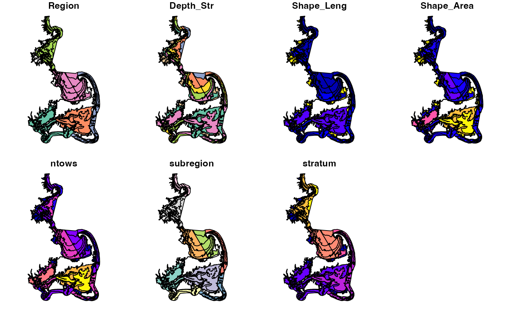

The spatial data bundled in this package are in sf
format. For the data in sf format, you can view the fields
simply by typing the name of the data set. For example, lets look at the
mass_inshore_strata
data set
NEFSCspatial::mass_inshore_strata
#> Simple feature collection with 42 features and 7 fields
#> Geometry type: MULTIPOLYGON
#> Dimension: XY
#> Bounding box: xmin: 231326.1 ymin: 772098.2 xmax: 336448.2 ymax: 958709
#> Projected CRS: NAD83 / Massachusetts Mainland
#> First 10 features:
#> Region Depth_Str Shape_Leng Shape_Area ntows subregion stratum
#> 1 <NA> Deleted 2565669.49 759405174 0 <NA> 0
#> 2 1 0 to 30 430636.02 191525256 3 1a 11
#> 3 1 31 to 60 612911.73 441891444 5 1a 12
#> 4 1 61 to 90 334155.14 190358433 3 1a 13
#> 5 1 91 to 120 72158.96 38431717 1 1a 14
#> 6 1 0 to 30 221661.49 152637234 2 1b 11
#> 7 1 31 to 60 222055.47 135715330 2 1b 12
#> 8 1 61 to 90 140738.77 111814595 2 1b 13
#> 9 1 91 to 120 58645.41 30844938 1 1b 14
#> 10 2 0 to 30 749831.33 658166333 10 2 15
#> geometry
#> 1 MULTIPOLYGON (((261470.4 78...
#> 2 MULTIPOLYGON (((264475.6 79...
#> 3 MULTIPOLYGON (((252198.2 78...
#> 4 MULTIPOLYGON (((249940.2 78...
#> 5 MULTIPOLYGON (((252837.9 78...
#> 6 MULTIPOLYGON (((256001.6 77...
#> 7 MULTIPOLYGON (((254794.5 77...
#> 8 MULTIPOLYGON (((286035.6 78...
#> 9 MULTIPOLYGON (((257938.4 77...
#> 10 MULTIPOLYGON (((296081.3 79...
plot(sf::st_geometry(NEFSCspatial::mass_inshore_strata))To visualize the fields in data simply use the plot function
plot(NEFSCspatial::mass_inshore_strata)